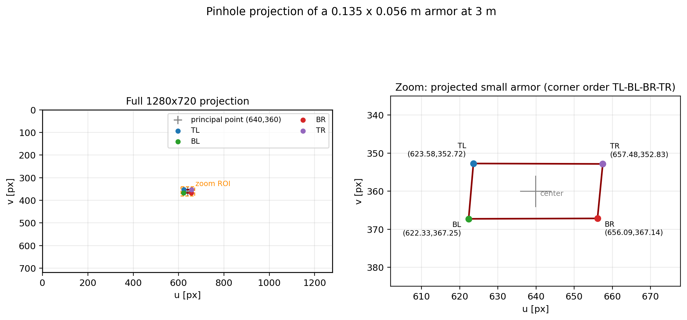
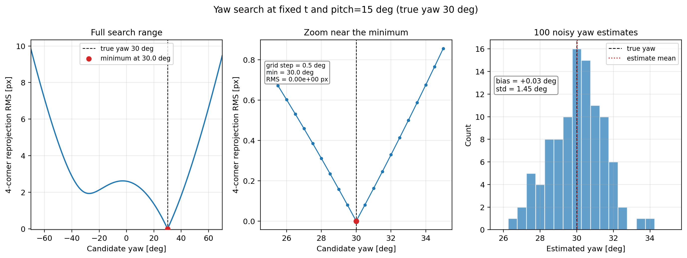
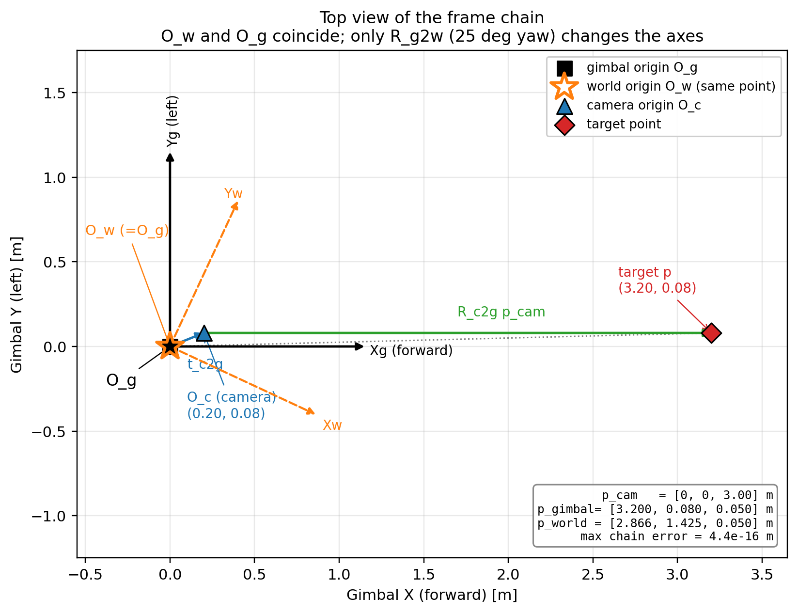
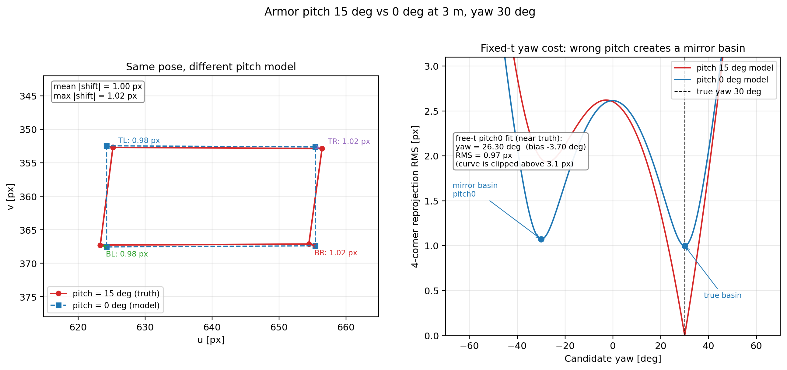
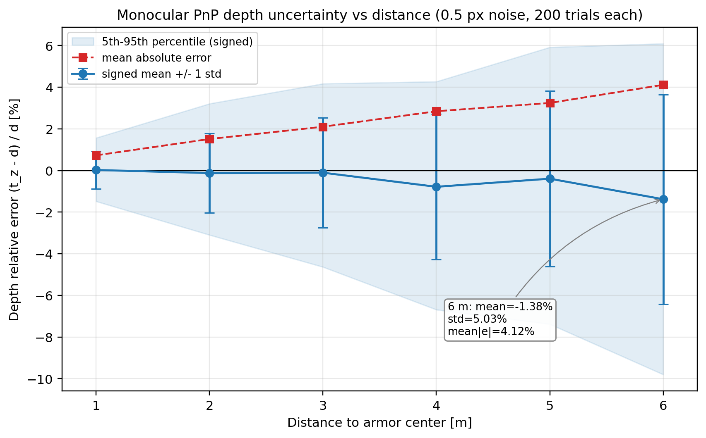

Lesson 0002 · 基础线
这一节把“检测到四个角点”变成“目标在世界系下的位置和朝向”，并解释 solvePnP、重投影、yaw 搜索、15° 装甲板俯仰到底在做什么。
相机坐标系下一点 P_c=(X,Y,Z)，归一化坐标：
x = X/Z, y = Y/Z
加畸变（径向 k1,k2,k3，切向 p1,p2），再乘内参：
u = fx · x_dist + cx
v = fy · y_dist + cy
K = [[fx, 0, cx],
[0, fy, cy],
[0, 0, 1]]
K 是内参，描述“相机本身”；R,t 是外参，描述“装甲板相对相机在哪”。PnP 要解的就是后者。

Z 在分母上。图由 verify/verify_pnp.py 生成。装甲板的 3D 模型坐标是已知的（比如 0.135 m × 0.056 m 的矩形）。检测器给出 4 个像素点。PnP 求解：
min_{R,t} Σ_i || π(K, R P_i + t) - u_i ||²
π(K, P_c) = ( fx X/Z + cx, fy Y/Z + cy )
这是一个非线性最小二乘。OpenCV 的 solvePnP(..., SOLVEPNP_IPPE) 是平面目标专用解法：先解单应，再分解出 R,t，速度快，而且会给出两个候选解（正面/背面）。
solver.cpp 和 wuhan 的 armor_pnp() 都做了这件事。但注意：本实验里 200/200 次两个解都正面朝相机，单靠法向量筛不掉镜像支；还需要 pitch 符号先验（+15°）或时域一致性。sp 固定 pitch 再搜 yaw，正好避开了这个坑。
把解出的 R,t 再投影回图像，和检测到的像素点比较：
e_i = || π(K, R P_i + t) - u_i || E = Σ_i e_i
E 小，说明这个位姿能解释看到的四边形。sp 的 optimize_yaw() 就是固定位置和 15° 俯仰，只扫 yaw，找 E 最小的 yaw：
for yaw in [-70°, +70°] step 1°:
E(yaw) = Σ_i || π(K, R(yaw, pitch=15°) P_i + t) - u_i ||
best_yaw = argmin E(yaw)

verify/verify_pnp.py 生成。PnP 给出的 t 在相机系。要变成自瞄能用的坐标，需要两次变换：
p_gimbal = R_camera2gimbal · p_camera + t_camera2gimbal p_world = R_gimbal2world · p_gimbal
注意第二行只有旋转，没有平移。这意味着：sp/SHtech 的“世界系”原点就在云台/IMU 旋转中心，它随机器人平移，但不随机器人旋转（轴是重力对齐的）。

verify/verify_pnp.py 生成。p_world 直接就是“目标相对枪口”的向量，弹道解算不需要再减云台位置。但代价是：机器人平移时，静止目标在状态里的速度会变成 -v_robot。sp/SHtech 靠 EKF 把这个相对速度学进去；wuhan 则额外维护 odom 系，瞄准前减掉云台 p/v，更物理。
RoboMaster 的装甲板通常前倾约 15°。如果 PnP/投影模型假设 pitch=0，四个角点的投影形状会变，yaw 的估计也会被带偏。

pitch=15° 和 pitch=0° 投影，角点像素差和 yaw 偏差。sp/wuhan 在重投影/位姿里显式写了 ±15°；SHtech 的 h() 只建模 yaw，这是一个模型简化。图由 verify/verify_pnp.py 生成。像素误差 σ_px 对应归一化坐标误差 σ_px/f，再乘深度 Z 得到横向误差：
σ_X ≈ Z · σ_px / f
而深度误差还更差：对于小基线/单目，深度主要由目标在图像中的“大小”决定，Z ∝ f·W / w_px，所以
σ_Z / Z ≈ σ_w / w_px
目标越远，w_px 越小，相对深度误差越大。这就是为什么三套代码的 R 都不是常数：sp 用 log(|Δθ|+1) 放大斜视角的距离噪声；SHtech 用 σ_r=0.2·d；wuhan 用灯条像素长度缩放 R。

R 放大。图由 verify/verify_pnp.py 生成。| 项目 | 入口 | 观测 | 特点 |
|---|---|---|---|
| sp | Solver::solve() | [yaw,pitch,d,armor_yaw] | PnP + ±70° yaw 重投影搜索；观测转球坐标 |
| wuhan | ArmorTarget::update() | 灯条端点投影 [angle,cx,cy,len] | 主更新不用 PnP 位姿；PnP 只用于初始化和单板深度差 |
| SHtech | CoordTransformer::pnp_get_measurement() | [y,x,z,yaw] | PnP IPPE；yaw 由法向量算，减去 IMU yaw |
solvePnP 的旋转误差均值 23.4°，因为 200 次里有 80 次选到了镜像解；
用“+15° 俯仰 + 正面朝向”先验挑分支后降到 6.6°，重投影 RMS 约 0.27 px。注意“正面朝向”本身不够：200/200 次两个解都满足它。
6 m 处深度相对误差 mean|4.1%|（约 247 mm）；yaw 扫描的估计标准差 1.45°；
忽略 15° 俯仰会让 yaw 偏 -3.7°、深度偏 +3.5%。见 verify/verify_pnp.py。
1. solvePnP 最小化的是什么？
2. sp/SHtech 的世界系原点在哪？
3. 为什么远处目标的 PnP 深度更不可信？